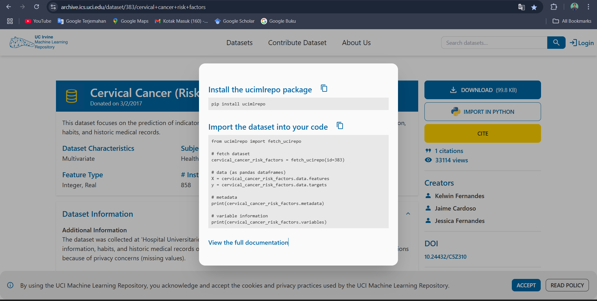

Tugas Pra-UAS#
Data Understanding#
Intergrasi Data#
Pertama-tama untuk membuat melakukan data mining kita memerlukan suatu data yang nantinya kita dapat proses untuk dijadikan model lalu dievaluasi. Saya sendiri mencari datanya dari web berikut ini: https://archive.ics.uci.edu/dataset/383/cervical+cancer+risk+factors . Untuk tampilan pengambilan datanya adalah sebagai berikut ini

from ucimlrepo import fetch_ucirepo
# Fetch dataset
cervical_cancer_risk_factors = fetch_ucirepo(id=383)
# Semua data (fitur + target) jadi satu DataFrame
df = cervical_cancer_risk_factors.data.features
# Cek 5 baris pertama
print(df.head())
Age Number of sexual partners First sexual intercourse \
0 18 4.0 15.0
1 15 1.0 14.0
2 34 1.0 NaN
3 52 5.0 16.0
4 46 3.0 21.0
Num of pregnancies Smokes Smokes (years) Smokes (packs/year) \
0 1.0 0.0 0.0 0.0
1 1.0 0.0 0.0 0.0
2 1.0 0.0 0.0 0.0
3 4.0 1.0 37.0 37.0
4 4.0 0.0 0.0 0.0
Hormonal Contraceptives Hormonal Contraceptives (years) IUD ... \
0 0.0 0.0 0.0 ...
1 0.0 0.0 0.0 ...
2 0.0 0.0 0.0 ...
3 1.0 3.0 0.0 ...
4 1.0 15.0 0.0 ...
STDs: Time since first diagnosis STDs: Time since last diagnosis \
0 NaN NaN
1 NaN NaN
2 NaN NaN
3 NaN NaN
4 NaN NaN
Dx:Cancer Dx:CIN Dx:HPV Dx Hinselmann Schiller Citology Biopsy
0 0 0 0 0 0 0 0 0
1 0 0 0 0 0 0 0 0
2 0 0 0 0 0 0 0 0
3 1 0 1 0 0 0 0 0
4 0 0 0 0 0 0 0 0
[5 rows x 36 columns]
Eksplorasi Data#
display(df)
| Age | Number of sexual partners | First sexual intercourse | Num of pregnancies | Smokes | Smokes (years) | Smokes (packs/year) | Hormonal Contraceptives | Hormonal Contraceptives (years) | IUD | ... | STDs: Time since first diagnosis | STDs: Time since last diagnosis | Dx:Cancer | Dx:CIN | Dx:HPV | Dx | Hinselmann | Schiller | Citology | Biopsy | |
|---|---|---|---|---|---|---|---|---|---|---|---|---|---|---|---|---|---|---|---|---|---|
| 0 | 18 | 4.0 | 15.0 | 1.0 | 0.0 | 0.0 | 0.0 | 0.0 | 0.00 | 0.0 | ... | NaN | NaN | 0 | 0 | 0 | 0 | 0 | 0 | 0 | 0 |
| 1 | 15 | 1.0 | 14.0 | 1.0 | 0.0 | 0.0 | 0.0 | 0.0 | 0.00 | 0.0 | ... | NaN | NaN | 0 | 0 | 0 | 0 | 0 | 0 | 0 | 0 |
| 2 | 34 | 1.0 | NaN | 1.0 | 0.0 | 0.0 | 0.0 | 0.0 | 0.00 | 0.0 | ... | NaN | NaN | 0 | 0 | 0 | 0 | 0 | 0 | 0 | 0 |
| 3 | 52 | 5.0 | 16.0 | 4.0 | 1.0 | 37.0 | 37.0 | 1.0 | 3.00 | 0.0 | ... | NaN | NaN | 1 | 0 | 1 | 0 | 0 | 0 | 0 | 0 |
| 4 | 46 | 3.0 | 21.0 | 4.0 | 0.0 | 0.0 | 0.0 | 1.0 | 15.00 | 0.0 | ... | NaN | NaN | 0 | 0 | 0 | 0 | 0 | 0 | 0 | 0 |
| ... | ... | ... | ... | ... | ... | ... | ... | ... | ... | ... | ... | ... | ... | ... | ... | ... | ... | ... | ... | ... | ... |
| 853 | 34 | 3.0 | 18.0 | 0.0 | 0.0 | 0.0 | 0.0 | 0.0 | 0.00 | 0.0 | ... | NaN | NaN | 0 | 0 | 0 | 0 | 0 | 0 | 0 | 0 |
| 854 | 32 | 2.0 | 19.0 | 1.0 | 0.0 | 0.0 | 0.0 | 1.0 | 8.00 | 0.0 | ... | NaN | NaN | 0 | 0 | 0 | 0 | 0 | 0 | 0 | 0 |
| 855 | 25 | 2.0 | 17.0 | 0.0 | 0.0 | 0.0 | 0.0 | 1.0 | 0.08 | 0.0 | ... | NaN | NaN | 0 | 0 | 0 | 0 | 0 | 0 | 1 | 0 |
| 856 | 33 | 2.0 | 24.0 | 2.0 | 0.0 | 0.0 | 0.0 | 1.0 | 0.08 | 0.0 | ... | NaN | NaN | 0 | 0 | 0 | 0 | 0 | 0 | 0 | 0 |
| 857 | 29 | 2.0 | 20.0 | 1.0 | 0.0 | 0.0 | 0.0 | 1.0 | 0.50 | 0.0 | ... | NaN | NaN | 0 | 0 | 0 | 0 | 0 | 0 | 0 | 0 |
858 rows × 36 columns
Struktur Dataset#
Fitur dan Data#
df.shape
(858, 36)
Seperti yang bisa yang ada lihat terdapat 858 data dengan 36 fitur atau column.
for col in df.columns:
print(f"- {col}")
- Age
- Number of sexual partners
- First sexual intercourse
- Num of pregnancies
- Smokes
- Smokes (years)
- Smokes (packs/year)
- Hormonal Contraceptives
- Hormonal Contraceptives (years)
- IUD
- IUD (years)
- STDs
- STDs (number)
- STDs:condylomatosis
- STDs:cervical condylomatosis
- STDs:vaginal condylomatosis
- STDs:vulvo-perineal condylomatosis
- STDs:syphilis
- STDs:pelvic inflammatory disease
- STDs:genital herpes
- STDs:molluscum contagiosum
- STDs:AIDS
- STDs:HIV
- STDs:Hepatitis B
- STDs:HPV
- STDs: Number of diagnosis
- STDs: Time since first diagnosis
- STDs: Time since last diagnosis
- Dx:Cancer
- Dx:CIN
- Dx:HPV
- Dx
- Hinselmann
- Schiller
- Citology
- Biopsy
Nama diatas adalah nama kolom yang ada pada data yang saya buat. Untuk penjelasan rinci pada setiap kolomnya akan berada dibawah ini.
Penjelasan Perkolom#
Kolom |
Keterangan |
Tipe |
Contoh Nilai |
|---|---|---|---|
Age |
Umur pasien |
Numerik |
18, 45 |
Number of sexual partners |
Jumlah pasangan seksual |
Numerik |
1, 3 |
First sexual intercourse (age) |
Usia saat pertama kali berhubungan |
Numerik |
15, 20 |
Num of pregnancies |
Jumlah kehamilan |
Numerik |
2, 4 |
Smokes |
Merokok (ya/tidak) |
Biner |
0, 1 |
Smokes (years) |
Berapa lama merokok |
Numerik |
0, 10 |
Smokes (packs/year) |
Intensitas merokok |
Numerik |
0, 2.5 |
Hormonal Contraceptives |
Menggunakan KB hormonal |
Biner |
0, 1 |
Hormonal Contraceptives (years) |
Lama menggunakan KB hormonal |
Numerik |
0, 5 |
IUD |
Pernah pakai IUD |
Biner |
0, 1 |
IUD (years) |
Lama pakai IUD |
Numerik |
0, 2 |
STDs |
Memiliki penyakit menular seksual |
Biner |
0, 1 |
STDs (number) |
Jumlah jenis STD |
Numerik |
0, 1 |
STDs:condylomatosis |
Jenis STD spesifik |
Biner |
0, 1 |
STDs:cervical condylomatosis |
STD di leher rahim |
Biner |
0, 1 |
STDs:vaginal condylomatosis |
STD di vagina |
Biner |
0, 1 |
STDs:syphilis |
Pernah sifilis |
Biner |
0, 1 |
STDs:pelvic inflammatory disease |
Infeksi panggul |
Biner |
0, 1 |
STDs:genital herpes |
Herpes kelamin |
Biner |
0, 1 |
STDs:molluscum contagiosum |
Penyakit kulit menular |
Biner |
0, 1 |
STDs:AIDS |
Pernah HIV/AIDS |
Biner |
0, 1 |
STDs:HIV |
Pernah HIV |
Biner |
0, 1 |
STDs:Hepatitis B |
Pernah Hepatitis B |
Biner |
0, 1 |
STDs:HPV |
Pernah HPV |
Biner |
0, 1 |
STDs: Number of diagnosis |
Jumlah STD terdiagnosis |
Numerik |
0, 2 |
STDs: Time since first diagnosis |
Waktu sejak diagnosis pertama STD |
Numerik |
NaN, 3 |
STDs: Time since last diagnosis |
Waktu sejak diagnosis terakhir STD |
Numerik |
NaN, 5 |
Dx:Cancer |
Pernah didiagnosis kanker |
Biner |
0, 1 |
Dx:CIN |
Cervical intraepithelial neoplasia |
Biner |
0, 1 |
Dx:HPV |
Didiagnosis HPV |
Biner |
0, 1 |
Dx |
Diagnosa umum |
Biner |
0, 1 |
Hinselmann |
Hasil tes Hinselmann |
Biner (target) |
0, 1 |
Schiller |
Hasil tes Schiller |
Biner (target) |
0, 1 |
Cytology |
Hasil sitologi |
Biner (target) |
0, 1 |
Biopsy |
Hasil biopsi (indikator utama kanker serviks) |
Biner (target utama) |
0, 1 |
Identifikasi Kualitas Dataset#
missing_per_column = df.isnull().sum()
missing_per_column = missing_per_column[missing_per_column > 0]
print(missing_per_column)
Number of sexual partners 26
First sexual intercourse 7
Num of pregnancies 56
Smokes 13
Smokes (years) 13
Smokes (packs/year) 13
Hormonal Contraceptives 108
Hormonal Contraceptives (years) 108
IUD 117
IUD (years) 117
STDs 105
STDs (number) 105
STDs:condylomatosis 105
STDs:cervical condylomatosis 105
STDs:vaginal condylomatosis 105
STDs:vulvo-perineal condylomatosis 105
STDs:syphilis 105
STDs:pelvic inflammatory disease 105
STDs:genital herpes 105
STDs:molluscum contagiosum 105
STDs:AIDS 105
STDs:HIV 105
STDs:Hepatitis B 105
STDs:HPV 105
STDs: Time since first diagnosis 787
STDs: Time since last diagnosis 787
dtype: int64
Pada Keterangan data di atas ada beberapa kolom yang miliki banyak sekali missing value. data data tersebut nantinya akan saya isi pada proses data preprocessing agar tidak menimbulkan kesalahan data.
Data Preprocessing#
Pada Tahapan berikutnya adalah memproses data yang kita punya menjadi suatu dataset yang baik agar ketika penulis membuat modelnya menjadi tidak error. Kolom yang memiliki missing value nantinya akan penulis ganti dengan data lain, mungkin akan diganti dengan menggunakan data mean pada kolom tersebut atau bahkan modus. Perlu diingat juga bahwa penulis tidak akan memasukkan semua fitur kolom untuk dianalisa, karena tentu saja nanti akan tidak relevan dengan apa yang ingin dituju. Jika memasukkan data yang tidak relevan dengan model bisa saja yang dihasilkan oleh model tersebut akan jelek atau bahkan sampah.
#
import pandas as pd
import seaborn as sns
import matplotlib.pyplot as plt
import math